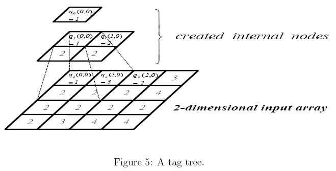
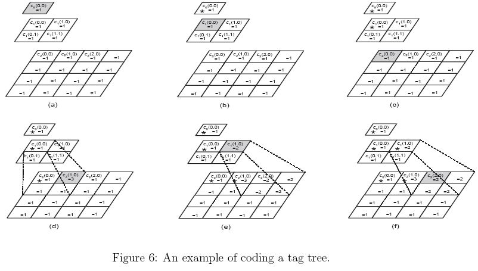

Home Page
F.A.Qs
Statistical Charts
Past Contests
Scheduled Contests
Award Contest
| Online Judge | Problem Set | Authors | Online Contests | User | ||||||
|---|---|---|---|---|---|---|---|---|---|---|
| Web Board Home Page F.A.Qs Statistical Charts | Current Contest Past Contests Scheduled Contests Award Contest | |||||||||
|
Language: Tag Trees
Description Referring Figure 5, a tag tree is a hierarchical representation of a 2-dimensional array (2^k*2^k, k is an integer and 2<= k<= 20) of nonnegative values, where successively reduced resolutions form a tree. Note that, for an n * n array, the indices of this array are from 0 to n-1. The value q(t, i, j) at every created node of the tree is the minimum value of its four children q(t+1, 2i, 2j), q(t+1, 2i, 2j + 1), q(t+1, 2i + 1, 2j), and q(t+1, 2i + 1, 2j + 1), where t, 0 <=t< k, is the level index and i and j are the indices of the 2-dimensional array. The 2-dimensional array at the lowest level is the input array.
 The tag tree will be coded into a sequence of bits using the rules described below. Once a tag tree is constructed, we associate each node with an upgrading value, c(t, i, j), which is initialized to zero. The upgrading value of a node is updated while the node is coded. Coding starts at the top node, i.e., the one with the level index 0, and a child cannot be coded until its parent is coded. While coding a node, a zero bit is output to indicate that its upgrading value c(t, i, j) is less than its q(t, i, j) and then c(t, i, j) is increased by one. A one bit is output to indicate that q(t, i, j) and c(t, i, j) are equal. After a node is coded, the upgrading values of all its descendent nodes which have smaller upgrading values are changed to the upgrading value of the coded node. The coding process will be continued until all nodes in the tag tree are coded. For example, in the following coding is started from the top node which has q(0, 0, 0) = 1 and c(0, 0, 0) = 0. Since c(0, 0, 0) < q(0, 0, 0), we output a zero bit. Next, we increase c(0, 0, 0) by 1 and find that c(0, 0, 0) = q(0, 0, 0), so we output a one bit. Thus, the output bits result from coding top node are 01. Once q(0, 0, 0) is coded, the upgrading values of all its descendent nodes with smaller upgrading values are changed to 1 as in Figure 6(a).  We mark the coded nodes in Figure 6(b)-(f) by an "*". Next, we code q(1, 0, 0). We have c(1, 0, 0) = q(1, 0, 0) = 1. A one bit is output and q(1, 0, 0) is coded. The associated upgrading values of its descendant nodes are updated again according to the updating rule (see Figure 6(b)). We continue coding q(2 0, 0). A one bit is output for the node because c(2, 0, 0) = q(2, 0, 0) (see Figure 6(c)). So, till now, we code q(0, 0, 0), q(1, 0, 0), and q(2, 0, 0) with 0111. Next, that we code q(2, 1, 0) which is 3. It is not necessary to code its ancestors again. Its ancestors q(1, 0, 0) and q(0, 0, 0) have already been coded. Thus, we can code q(2, 1, 0) directly. Its output code will be 001 since c(2, 1, 0) is increased twice before equal to q(2, 1, 0) (see Figure 6(d)). Continue this example. Assume that we are going to code q(2, 2, 0) which is 2. We have to code its parent q(1, 1, 0) first since it is not coded yet. Its output code is 01 and the related upgrading values are updated as in Figure 6(e). Back to code q(2, 2, 0), only a one bit is output (see Figure 6(f)). Input The first line contains a positive integer N, <=10, indicating the number of test cases. In each test case, the first line contains an integer k indicating that the array size is 2^k * 2^k. Then, the following 2^k lines represent a 2^k * 2^k array. The rows of this 2^k * 2^k array are listed line by line. Each row contains 2^k nonnegative integers separated by a space. Output The number of bits used to code the input array in one line for each test case. Sample Input 3 2 1 3 2 3 2 2 2 4 2 2 2 2 2 3 4 4 2 2 1 1 4 1 3 2 3 1 1 3 2 2 1 3 5 3 4 1 3 2 5 2 1 2 1 1 3 4 1 1 3 2 3 3 2 1 2 4 1 2 4 2 4 1 2 3 4 1 1 2 3 2 4 4 1 2 3 2 3 2 4 4 2 4 4 5 1 1 1 1 3 3 3 1 2 3 2 3 4 2 Sample Output 37 38 155 Source |
[Submit] [Go Back] [Status] [Discuss]
All Rights Reserved 2003-2013 Ying Fuchen,Xu Pengcheng,Xie Di
Any problem, Please Contact Administrator